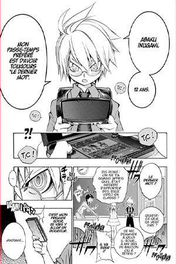
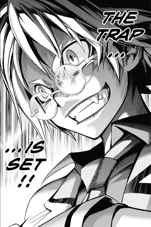

School Judgment
Synopsis
Dans un futur proche, pour enrayer les problèmes de persécutions et de châtiments corporels, le gouvernement japonais a introduit dans les programmes d'enseignement une heure de "tribunaux scolaires". L'histoire tourne autour d'Abaku Inugami, avocat dans les tribunaux scolaires. Mais un mystère tourne autour du passé d'Inugami... Et de l'effrayant procès du sang.
 Les personnages principaux
Abaku Inugami
犬神暴狗
Il est le premier survivant du procès du sang. Il s'agit d'un avocat de renom dans les procès scolaires, si bien qu'il fait partie des trois meilleurs avocats au monde. Il recherche constamment d'avoir le dernier mot par n'importe quel moyen ce qui le donne un air très insolent. De ce fait, il n'est, au début, pas très apprécié par ses camarades, mais il finit par se faire des amis. Avant la tragédie du procès du sang, il était à l'école élémentaire S en classe 1re2. Il était, contrairement à sa personnalité actuelle, pleurnichard, peureux et avait du mal à aligner deux mots. Il passait beaucoup de temps avec Sarutobu qui, inversement à Inugami, débordait d'assurance. Il se faisait continuellement persécuter par Kijima bien qu'il considère celle-ci comme une amie . Après que toute sa classe fut massacrée sous ses yeux le jour du procès du sang (excepté Sarutobu, Kijima et Tento qui était malade ce jour-là), il perdit la mémoire, sous le choc, tout ce qui s'était passé ce jour-là. Il ne la retrouvera que quand Kijima lui parlera de ses souvenirs. Il est très proche de Tento dont il fait son assistant. Après le procès du sang, il est envoyé à une école secrète sur une ile nommée Onigashima où il est formé à devenir avocat.